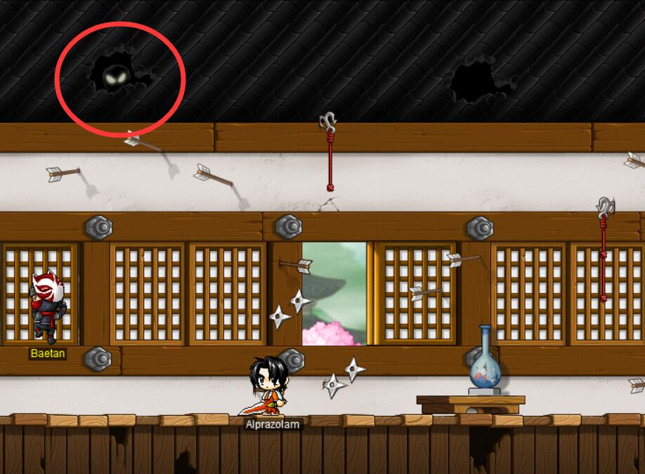

忍者城堡
第一部分
Castle Corridor
在第一张地图内，有以下5扇隐藏门，根据提示找到正确的隐藏门进入
gate0，关键词：gaze that follows you
gate1，关键词：dream、black、blue
gate2，关键词：breath of spring frozen
gate3，关键词：only thing、whole universel
gate4，关键词：scared、mystical、creature
Castle Corridor
根据以上提示进入正确的门后，来到第二张地图，地图名仍然是Castle Corridor，但布局与第一张不同
gate0，关键词：eyes back your head

gate1，关键词：cold gaze，注意虽然和gate1长得一样，但是位置不同
gate2，关键词：land、sage dwells
gate3，关键词：mouse hole
gate4，关键词：garden
Ninja Castle Long Corridor Identity
根据以上提示进入正确的门后，来到第三张地图，此张地图正确的传送门几乎都是黑洞类的，注意准确定位
gate0，关键词：chilling gaze
gate1，关键词：gaze that follows you
gate2，关键词：missing hint
gate3，关键词：scared、mystical、creature
gate4，关键词：tracks of a fugitive
Ninja Castle Long Corridor 0f
根据以上提示进入正确的门后，来到第四张地图
gate0，关键词：cold gaze
gate1，关键词：murderous rage
gate2，关键词：devilishly alluring fragrance
gate3，关键词：romance
gate4，关键词：relationship
Ninja Castle Long Corridor Daimyo
根据以上提示进入正确的门后，来到最后一张地图
gate0，关键词：chilling gaze
gate1，关键词：eyes back your head
gate2，关键词：Treasure
gate3，关键词：vain display、riches、trophies
gate4，关键词：Light、uneven
第二部分
有三扇门，其中一扇是通往正确的下一层的，其中一扇是通往错误的上一层的，还有一扇门很让人抓狂，直接回到第一层，你得通过摸索找出正确的路
你可以通过辨识怪物来判断你所处于哪一层，怪物由第一层到最后一层按如下方式排列

事实上最后一层的怪物是，其中一扇门是通往最终的boss关的，其余两扇门都是通往的